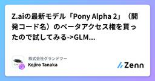
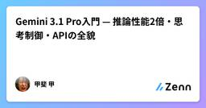
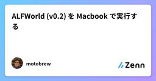
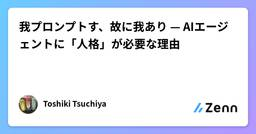
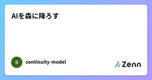
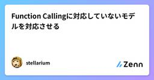

Zennの「大規模言語モデル」のフィード
フィード

Z.aiの最新モデル「Pony Alpha 2」（開発コード名）のベータアクセス権を貰ったので試してみる
Zennの「大規模言語モデル」のフィード
はじめにまずこのモデルを試すにあたって特に個人・組織としてZ.AI社とは一切の取引関係はなく、金銭の授受はありません（個人としてZ.AI GLM Coding Maxプランを契約しているだけ）X(Formerly Twitter)でZ.AIの中の人が「DMくれたら新しいLLMモデルのベータアクセス権限あげるよ」と言っていたのでDMしたら貰えた、そんな感じです。あと本記事はちゃんと人間が魂込めて手打ちします。後はベータモデルということで製品版（GLM-5.xとか？）は更に改良されている可能性もあるはず。参考までに。 Pony Alpha 2とは？Z.AIの格安高性能モデルで...
12時間前

【5分で動かす】AIエージェントとMCPサーバーの通信を監査する agentwit 入門
Zennの「大規模言語モデル」のフィード
はじめに前回の記事ではagentwitの設計思想（Guard vs Witness）について書いた。今回は実際に動かす手順を説明する。インストールから監査レポート生成まで5分で完了する。対象読者：MCPサーバーを使っているAIエンジニアAIエージェントの挙動を記録・監査したいセキュリティエンジニアペネトレーションテストでAIエージェントを対象にしている人 agentwitとはAIエージェントとMCPサーバーの間に透過プロキシとして挟み、全通信をSHA-256チェーン付きで記録するOSSツール。AIエージェント ↓ agentwit proxy ...
14時間前
Slack bot x Claude x Cloud Run で社内業務を自動化する
Zennの「大規模言語モデル」のフィード
はじめに「この業務、AIでなんとかならない?」という相談から始まり、社内の商品企画業務を自動化する Slack bot を Google Cloud 上に作りました。商品企画の業務は、社内にある在庫や価格のデータを確認しつつ、一定のテーマ性を持たせながら購買意欲をそそるラインナップを考えるというクリエイティブな要素のある業務です。この記事では、技術選定やインフラ構成といった技術面の話と、担当者の暗黙知を LLM に渡せる形にするという開発の流れの話を書いていきます。技術的に目新しいことはしていませんが、Slack の3秒制限の対応や Firestore を使った重複排除など、ミ...
17時間前
MultiRoleChatにキャラを設定してみると面白いかも
Zennの「大規模言語モデル」のフィード
ちょっと前に、 LLM API をロールを割り当てて議論させる MultiRoleChat というツールを作りました。https://github.com/TsukiTsuKiss/llm-chat-system使い方次第で見ていても楽しいですね。設定ファイルは、こんな感じです。LLM-CHAT-SYSTEM\ORGANIZATIONS\NOKURU│ config.json│└─roles aoi.txt chiaki.txt nadeshiko.txt rin.txtroles の下はプロンプトのような...
17時間前
Claude Code 編集会議実録 — AIが企画に反論した5事例
Zennの「大規模言語モデル」のフィード
Claude Code のマルチエージェント編集チームでは、AI が書く前の企画・編集会議段階で互いに反論し合います。「根絶は誇大」「コストが省略されている」「専門用語の定義が不正確」——批評家（Anti-Fan）や技術監修（Principal Reviewer）による指摘が企画を変えた 5 事例の実録と、そこから帰納したチェックリストを紹介します。!TL;DR企画段階で批評家（Anti-Fan）や技術監修（Principal Reviewer）などの批判的エージェントを介入させることで、「誇大タイトルの炎上リスク」「コスト隠蔽」「専門用語のハルシネーション」を事前に検出できる。...
18時間前
AIエージェントの「証人」を作った——MCPサーバー監査ツール agentwit の設計思想
Zennの「大規模言語モデル」のフィード
はじめに2026年3月、MuskがTesla × xAIの共同プロジェクト「Macrohard」を発表した。「企業全体の機能をエミュレートできる」と謳うAIエージェントだ。大げさな宣伝文句はともかく、この発表が示している事実は重い。AIエージェントが「企業インフラとして」動く時代が来ようとしている。そのとき、あなたは問われる。「そのエージェント、昨日何をしていましたか？」答えられるか？ 既存ツールはなぜ「証人」になれないのかMCPセキュリティツールはすでにいくつか存在する。mcp-scan、Proximity、Intercept……。優れたツールばかりだ。しかし...
19時間前

Gemini 3.1 Pro入門 — 推論性能2倍・思考制御・APIの全貌
Zennの「大規模言語モデル」のフィード
はじめに2026年2月19日、GoogleはGemini 3シリーズの最新モデル「Gemini 3.1 Pro Preview」をリリースしました。抽象推論ベンチマークARC-AGI-2で77.1%を記録し、前世代の31.1%から2倍以上のスコア向上を達成しています。本記事では、Gemini 3.1 Proの主要な新機能・ベンチマーク結果・API仕様・実践的な使い方を、公式ドキュメントと公開情報をもとに解説します。 この記事で学べることGemini 3.1 Proの思考レベル制御（low / medium / high）の仕組みと使い分けARC-AGI-2やSWE-b...
20時間前
skillって、もともと無詠唱で発動するものだったはず
Zennの「大規模言語モデル」のフィード
「無詠唱」とは、RPG で詠唱なしにスキルが発動する状態のことだ。ここでは比喩として使っている。skill は本来、ユーザーが毎回コマンドで呼び出すものではなく、文脈が条件を満たしたときにモデルが自然に参照する補助知識——つまり文脈起動型として設計されていた、という意味だ。ここでいう「自動」とは、人間が文脈条件を設計したうえで、条件を満たしたときにモデルが自然に参照する、という意味である。最近の agent / skill 論を見ていると、どうにも話が噛み合っていないと感じることがある。その原因のひとつは、skill の「見え方」が変わってしまったことにある。ただ、その前にもっと根...
1日前

RTX 4080でRAGを自作する — Ollama × ChromaDB × Python 150行の全記録
Zennの「大規模言語モデル」のフィード
はじめに「社内ドキュメントをAIに検索させたい」「自分のブログ記事をLLMに読ませて質問応答したい」2026年、RAG（Retrieval-Augmented Generation）はAIアプリの定番アーキテクチャになった。しかし多くの解説記事は OpenAI API + Pinecone を前提としていて、完全ローカルで動く実装の情報は少ない。この記事では、RTX 4080 (16GB VRAM) 1枚で、外部APIゼロ・月額ゼロで動くRAGシステムを自作した全記録を公開する。 実験の構成ドキュメント群（Markdown 19本） ↓ チャンク分割（500文字 × ...
1日前

ALFWorld (v0.2) を Macbook で実行する
Zennの「大規模言語モデル」のフィード
当記事では、AgentBench というベンチマークのうち、 ALFWorld を Macbook で実行する手順を紹介します。Macで実行するのは AgentBench 側です。それとは別に LLM (AI Agent)をどこで実行するかは選択の余地があります。Ollama を使って同じMac上で実行OpenAI, DeepInfra, OpenRouter などの APIRunPod, AWS などのクラウドやお手持ちのGPUを使って vllm 起動当記事では、以下の３パータンの設定例を紹介しています。Ollama (qwen3:4b)OpenAI API (gp...
1日前

生成AIが魅せる「同相の幻惑」 〜決定論的写像の錯覚、その位相幾何学的深淵〜
Zennの「大規模言語モデル」のフィード
導入前回の記事では、Softmax CrowdingとSemantic Driftにより、自己回帰モデルの長時間生成が数学的に必ず破綻することを見た。ではなぜ、我々エンジニアはなお「完璧なプロンプトを与えれば、完璧な出力が得られる」という 決定論的写像（Deterministic Mapping） の幻想に囚われ続けてしまうのか？その答えは、LLMの潜在空間（Latent Space）が持つ位相的連続性が、あまりにも美しく、そして欺瞞的だからだ。本稿では、同相写像（Homeomorphism）、ホモトピー（Homotopy）、計量の歪曲、そして測度論的な位相の断裂を軸に、ハル...
1日前

サクッとローカルAIモデル（LLM/VLM）をVLLMで試す
Zennの「大規模言語モデル」のフィード
昨今、かなりLLMがすすんで今では無料で使えるSLM（Small Language Model: LLMのパラメータをある程度制限して少ないGPUリソースで動くようにしたもの）を試したりすることがそれほど特殊ではなくなってきてます。昔は量子化されたＧＧＵＦというファイルをダウンロードしてollamaから呼び出してとやってましたが、いまではすごく簡単にできるように。たまたま必要になったのでやってみて驚くほど単純だったので記事にします。今回は私は40GBのＶＲＡＭをつかいましたが使えるリソースに合わせてモデルを調整してみてください。今私が実験した環境は以下です。# cat /etc/...
1日前

我プロンプトす、故に我あり — AIエージェントに「人格」が必要な理由
Zennの「大規模言語モデル」のフィード
「AIに人格が必要？ ないでしょ」じゃあ聞くけど、目的もなくPR投げてくるbotの改善案、何件マージした？ゼロでしょ。目的のない知性がどうなるか、もう体験してるんだよ。 この記事で話すこと2026年、AIエージェントは「道具」から「同僚」になりつつある。AWSのシニアSAが「2020年は人間が主体でAIがアドバイスした。2026年はAIが主体で人間がアドバイスする」と登壇で語り、GitHub Copilotの.agent.mdにコーディング哲学を与えると2行のワンライナーから80行のデザインパターン祭りまで出力が変わることが実証されている。ツールは揃った。能力...
1日前

Transformerで位置表現を観察してみる
Zennの「大規模言語モデル」のフィード
はじめに前回の記事では、同じデータ量でも選び方次第で学習効率が大きく変わることを確認しました。今回は位置表現を変えてみます。Transformerが入力トークンの位置を認識する方法として、学習可能な絶対位置埋め込み（Absolute PE）が使われます。Su et al. (2021)が提案したRotary Position Embedding（RoPE）は、相対位置を回転行列で表現することで、訓練時より長い系列への外挿における性能（Length Generalization）が改善されると言われています。これを自作Transformerで検証してみます。!個人の実験の...
1日前

OpenClaw + Ollama でローカル AI エージェントを構築した記録
Zennの「大規模言語モデル」のフィード
OpenClaw + Ollama でローカル AI エージェントを構築した記録MacBook（Apple Silicon / 128GB RAM）上に、OpenClaw と Ollama を使ったローカル AI エージェント環境を構築した。クラウド API を使わず、完全ローカルで動く AI エージェントを目指した一日の記録。 やりたかったこと完全ローカルで動く AI エージェントを構築するOpenClaw（OSS の AI エージェント Gateway）を Docker で動かすLLM は Ollama 経由でローカルモデルを使う（API課金なし）エージェントの...
2日前

AIを森に降ろす
Zennの「大規模言語モデル」のフィード
※この記事はシリーズ記事の3本目ですAIは森を見ている。ユーザーは花を見ているAIはログを読んでいないのかもしれない Stable環境と止まり木（Perch） プロンプトはこの問題を解決できるのかここで自然に浮かぶ疑問がある。もしAIが森の上を飛びながらユーザーの位置を推測しているのだとしたら、プロンプトを書けば解決するのではないか。多くの人はそう考える。実際、今のAIの使い方ではプロンプトを書くことが最も一般的な方法になっている。-役割を指定する-ルールを書く-出力形式を指定する-禁止事項を書くこうした工夫によってAIの振る舞いを安定させよう...
2日前
人間をLLMだと思うと優しいUIが実装できる説
Zennの「大規模言語モデル」のフィード
"UI/UX" を "プロンプト/推論プロセス" と読み替え、人間をLLMだと思うと優しいUIが実装できる説を唐突に提唱していきます。「人間はLLM、UIはプロンプト、UXは推論」この視点でよくあるUI設計の話を説明していきます。 足りないUI = 足りないプロンプト例えばプレースホルダーがない例。IDとだけ書かれたインプットにユーザーは、メールアドレスを入力するのか？サービス固有のIDが必要なのか？と不要な推論を必要とします。入出力は方向付けをすると出力が安定する のは人間もLLMも同様です。 UIのノイズ = プロンプトのノイズ逆パターン。例えば入力...
2日前

1-bit LLMってなに？BitNetを調べたら「え、これって革命じゃない？」ってなった話
Zennの「大規模言語モデル」のフィード
GitHub Trendingを眺めていたら、microsoft/BitNet がいきなり2,000以上スターを集めていて気になりました。「1-bit LLM」ってなんぞ？ と思って調べたら、思ってたより全然すごい話だったので共有します。 普通のLLMはどうなってる？まず前提として、GPTとかClaudeとかのLLMは、「重み（パラメータ）」と呼ばれる数値の塊でできています。普通はこの重みを 32bit浮動小数点数 や 16bit浮動小数点数 で表現しています。数が細かいほど精度が上がるけど、その分メモリも計算コストもかかる。普通のLLM: 一つの重み = 0.3847219...
2日前

Function Callingに対応していないモデルを対応させる
Zennの「大規模言語モデル」のフィード
経緯Gemma 3 を使ったシステムでエージェント機能を作りたかったが、Gemma 3 は Function Calling に対応していなかった。公式ページには「関数呼び出し」って書いてあるのに何故…。プログラミング インターフェース用にインテリジェントな自然言語コントロールを構築します。Gemma 3 では、特定の構文と制約を使用してコーディング関数を定義できます。モデルはこれらの関数を呼び出してタスクを完了できます。https://ai.google.dev/gemma/docs/core?hl=ja#function-callingモデルを変えるという選択肢もあっ...
2日前

Python asyncio で複数API並列呼び出し ─ LLM API のレートリミット対策まで
Zennの「大規模言語モデル」のフィード
はじめにPythonでAPIを順番に呼び出していると、処理時間がボトルネックになる場面に必ず直面します。たとえば、100件のテキストをLLM APIで処理する場合、1件あたり2秒かかるとすると同期処理では合計200秒（約3.3分）かかります。しかしasyncioを使って並列化すれば、理論上は最遅リクエストの時間に近い2〜5秒程度で完了します。# 同期処理: 100件 × 2秒 = 200秒for text in texts: result = call_api(text) # ブロッキング# asyncio並列: ほぼ最遅リクエストの時間で完了results =...
2日前